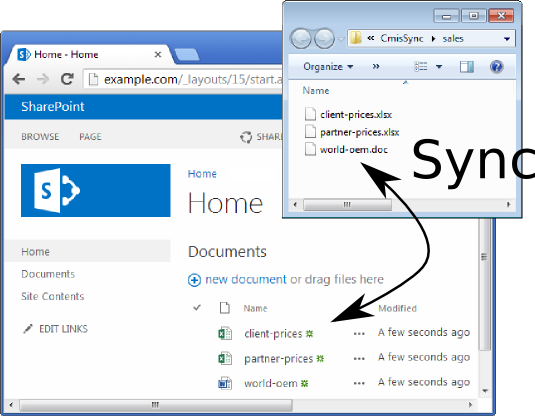
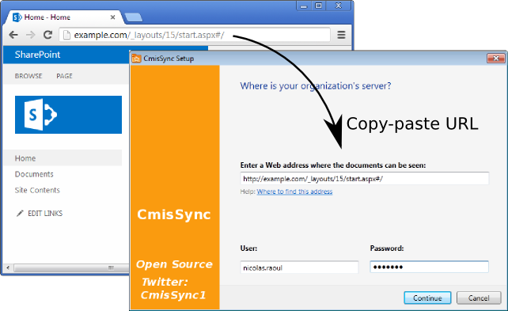

CmisSync allows you to keep in sync with your company's SharePoint, and read/edit the documents even when offline:
Step 1
Step 2
Run CmisSync.
After a few welcome screens, it will start running as an icon in the tray:
Click on the tray icon and select "Add a CMIS folder".
Step 3
A dialog appears. In the address field, copy-paste the URL of your SharePoint server, it is the web address you use to access SharePoint in your web browser:

Insert the https:// prefix if it did not get copied.
Then enter your SharePoint username/password.
Step 4
The next screen shows the SharePoint folders.
Choose the folder you want to sync (most likely inside "Documents").
That's all!
CmisSync will now sync SharePoint to your desktop, whenever you have a network connection.
CmisSync does two-way sync, which means you can modify/add files.
Should a conflict occur, a backup is made and you can handle it by choosing which version to keep.
- Sync any SharePoint content
- Choose exactly what you want to sync
- Based on CMIS, more interoperable than Microsoft's proprietary protocols. Migrating to Alfresco is easy.
- Frequent releases based on users feedback
- Open Source (volunteers welcome!)